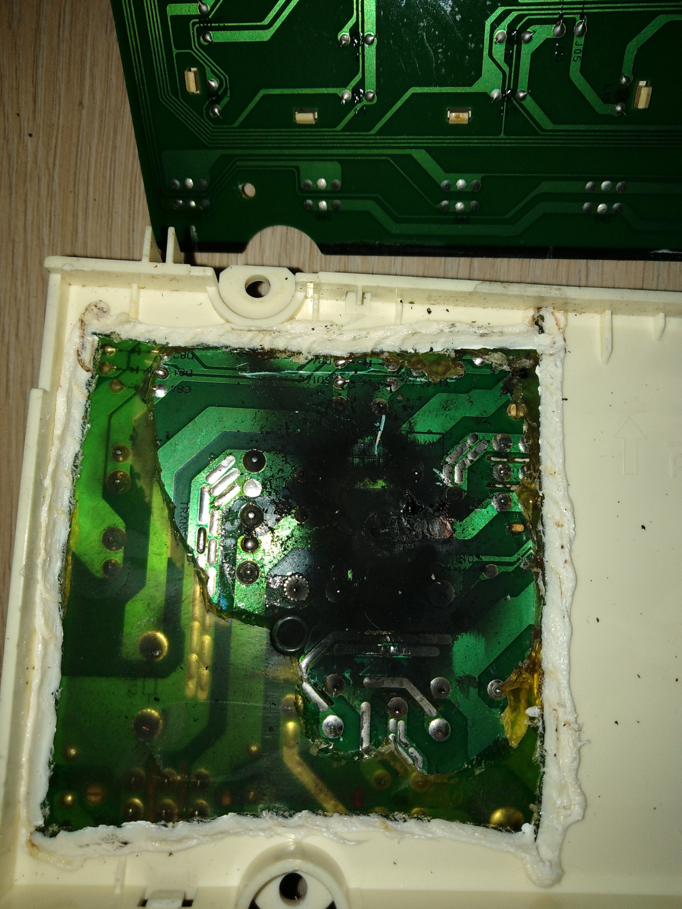
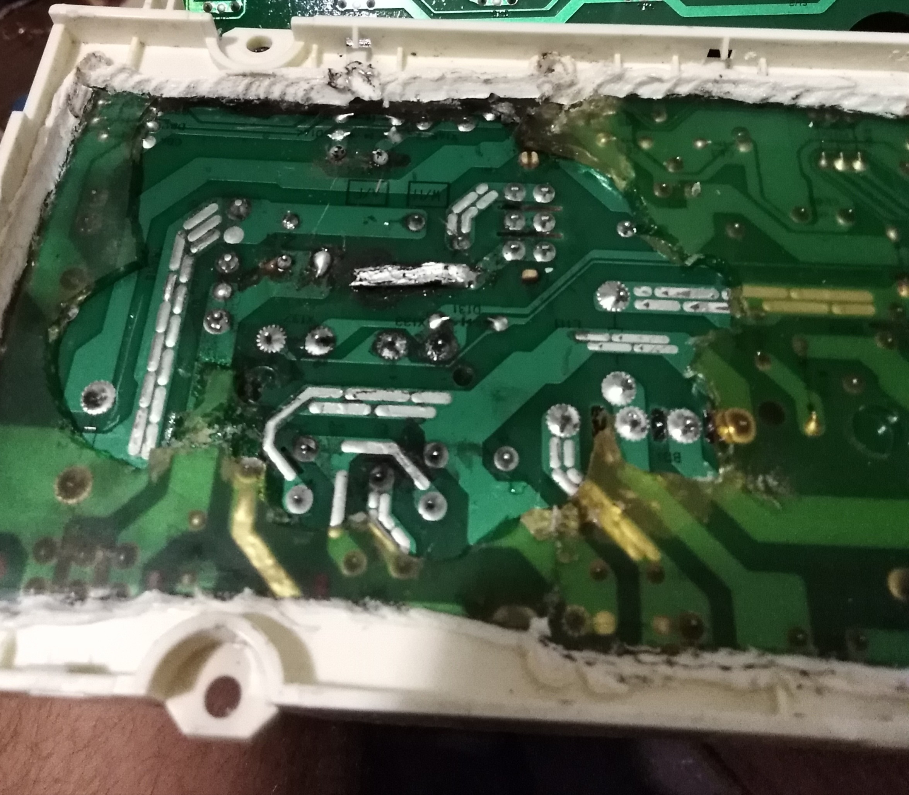
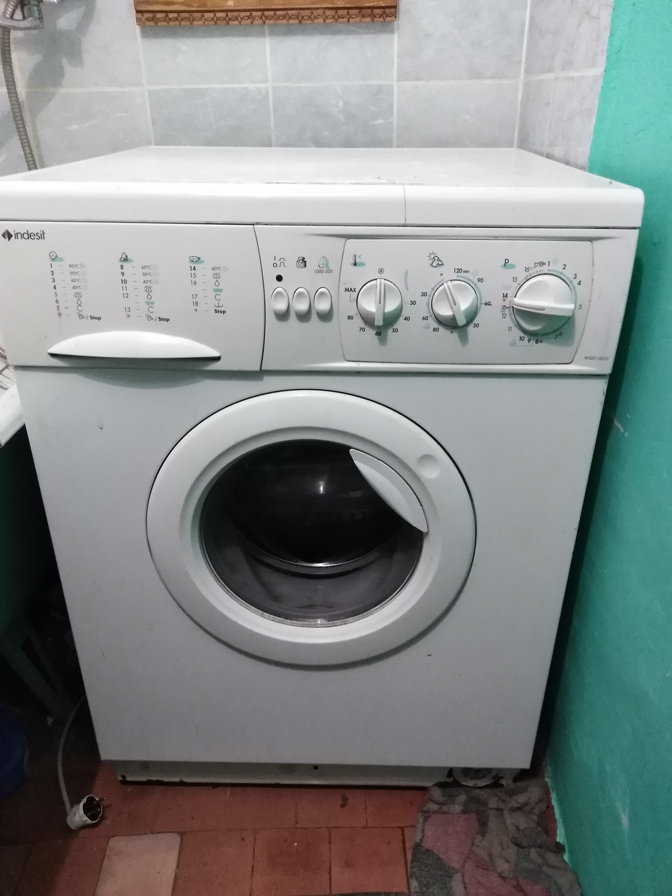
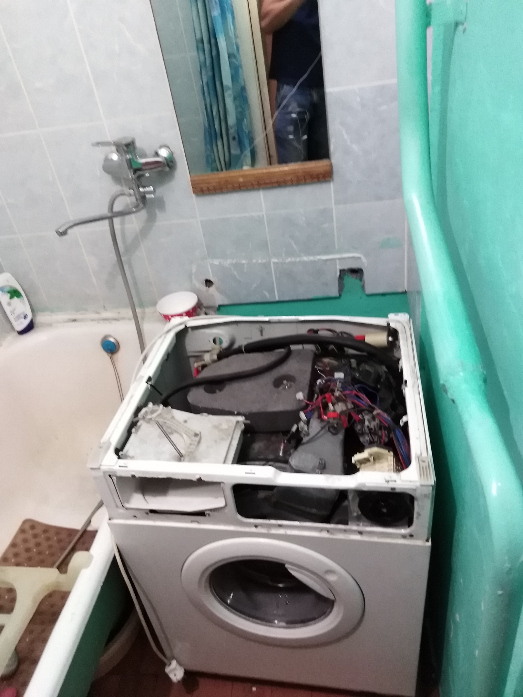

Ремнот стиральных машин в Омске
Консультация и приём заявок
8(950)219-53-72
Здравствуйте! Меня зовут Виктор и я уже долгое время занимаюсь ремонтом стиральных машин в городе Омске
В мои услуги входит:
Выезд на дом для диагностики Текст
Замена комплектующих
Помощь в установке и прочих сложностей
Пример ремонта сгоревшей платы управления


Вскрытие и диагностика у заказчика дома


Прайс
Тип услуг
Стоимость
Диагностика
200
Ремонт модуля управления
1500
Замена щёток электродвигателя
700
Замена сливного насоса
600
Замена подшипников
2000
Установка+подключение
500